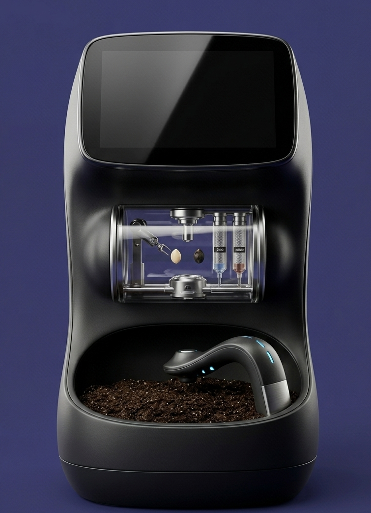

The Future of Seed Tech
We are moving beyond automated hydration. Our research division is developing a sophisticated bio-synthesis platform capable of merging genetic seed profiles.

The Bio-Synth Chamber: CustomFruit™
The central achievement of our Seed Tech division. This chamber combines a robotic micro-synthesis arm, a clear modification capsule, and an integrated soil bed.
Status: Development V0.9 - Released Soon
Digital Fruit Programming
Imagine a citrus-infused strawberry or a high-protein apple. Seed Tech allows you to "program" the flavor and nutritional density of your harvest.
Sub-Soil Deposition
Once genetically optimized, the specialized seed is automatically added into the soil bed for seamless, unassisted germination.